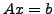
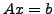

For a given matrix  , its polar decomposition is , where
, its polar decomposition is , where
 and
and  is unitary. Let
is unitary. Let  be real symmetric and
nonsingular, than the matrix absolute value is also nonsingular and
be real symmetric and
nonsingular, than the matrix absolute value is also nonsingular and
 is the matrix sign of
is the matrix sign of  , having only two distinct eigenvalues, plus
and minus one. The matrix
is the ideal symmetric
positive definite preconditioner for the linear system , making the
preconditioned MINRES to converge in at most two steps. We call
, having only two distinct eigenvalues, plus
and minus one. The matrix
is the ideal symmetric
positive definite preconditioner for the linear system , making the
preconditioned MINRES to converge in at most two steps. We call  the
absolute value preconditioner, if it is spectrally equivalent to
.
the
absolute value preconditioner, if it is spectrally equivalent to
.
If the matrix  is (block) strictly diagonally dominant, the
preconditioner
is (block) strictly diagonally dominant, the
preconditioner  can be chosen as the inverse to the absolute value of
the (block) diagonal of
can be chosen as the inverse to the absolute value of
the (block) diagonal of  . Such a choice can, e.g., be efficient in
plain-wave electronic structure calculations.
. Such a choice can, e.g., be efficient in
plain-wave electronic structure calculations.
For a model problem, where  is a finite difference approximation of
the shifted negative Laplacian, we construct an efficient geometric
multigrid absolute value preconditioner, in which the smoothing is done
using the action of
is a finite difference approximation of
the shifted negative Laplacian, we construct an efficient geometric
multigrid absolute value preconditioner, in which the smoothing is done
using the action of  and appears only on the coarsest grid.
Our numerical tests demonstrate the effectiveness of such a
preconditioning.
and appears only on the coarsest grid.
Our numerical tests demonstrate the effectiveness of such a
preconditioning.